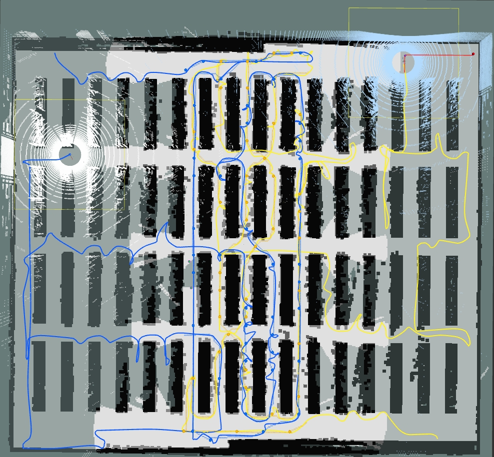
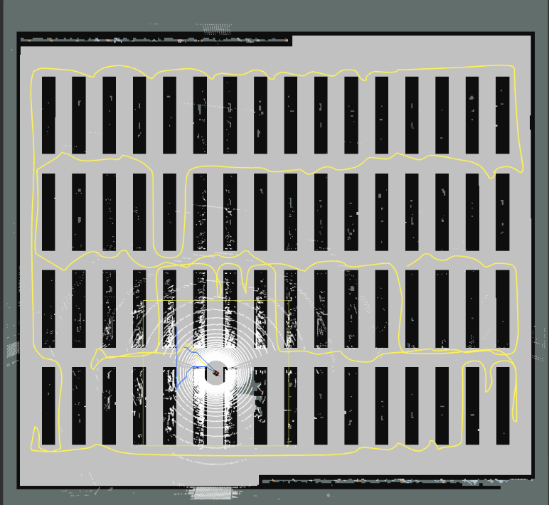
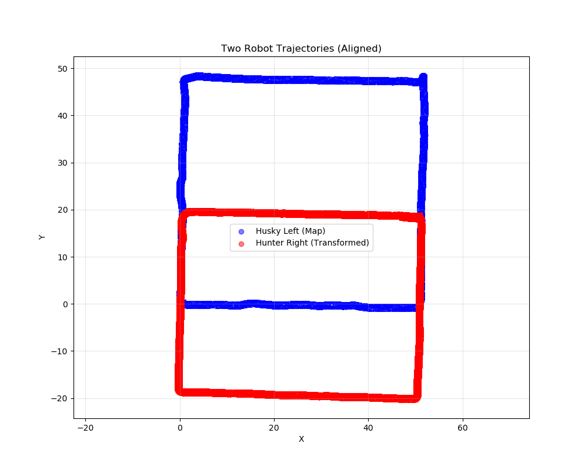

I am currently a Master's student in the School of Electrical and Electronic Engineering (EEE) at Nanyang Technological University (NTU), Singapore.
My research interests include autonomous exploration, vision-language navigation, vision-language-action models, and simultaneous localization and mapping. I am interested in building intelligent robotic systems that can perceive, reason, and act reliably in complex environments.
Considering the path planning problem for autonomous exploration of an unknown
environment using multiple heterogeneous robots and solving with search-based
method.
A diffusion planner for PixelGoal navigation that combines metric goal prediction with planning-oriented occupancy representations. L3ROcc supplies geometric supervision by converting monocular navigation videos into 3D occupancy and trajectory annotations.
Projects / Experience
Research Projects
Occ Planner
Our methodology comprises L3ROcc and OccPlanner. L3ROcc derives scalable local geometric supervision from monocular navigation videos. Using this supervision, OccPlanner learns planning-oriented local geometry from RGB-D observations. Meanwhile, it grounds the PixelGoal in an egocentric metric representation. The resulting goal and occupancy representations jointly condition a diffusion trajectory policy.
End-to-end navigation from RGB-D observations using differentiable neural networks.
Magnetic-Field-Based Multi-Robot Exploration and Mapping
Developed a cooperative exploration system that uses magnetic sensing for robust localization in corridor environments and CMA-ES-based pose optimization to align magnetic and LiDAR maps across multiple robots.



Dead-End Avoidance via Topological Prediction
TPNet combines point clouds and images to predict lightweight topological graphs of dead-ends. Integrating these predictions with an enhanced collision-checking module enables trajectory-library-based local planners to avoid dead-ends under incomplete observations, validated in simulation and real-world UAV experiments.
FAST LAB, Huzhou Institute of Zhejiang University (Dec 2023 – Jul 2024)
UAV Time-Optimal Path Planning: Generated offline trajectory libraries under dynamic constraints using kd-tree search and efficient point-cloud collision detection.
Dead-End Prediction for Local Planning: Combined trajectory memory, point-cloud and image features, and neural networks to predict and avoid local planning dead ends.
AirSim Simulation: Built UAV and vehicle simulations and validated ROS-based mapping and trajectory code in Unreal Engine.
Hierarchical Heterogeneous Multi-Robot Exploration: Designed a hierarchical exploration framework for 3D environments, combining dense local and sparse global maps, TSP-based optimization, heterogeneous robot task allocation, and viewpoint planning under traversability constraints.
CARTIN Lab, Nanyang Technological University (Aug 2025 – Present)
Magnetic-Field-Based Multi-Robot Exploration: Developed cooperative exploration with magnetic sensing for robust localization in corridor environments.
Global Map Alignment Optimization: Implemented CMA-ES-based pose optimization to align magnetic and LiDAR maps from multiple robots.
{kind=link}